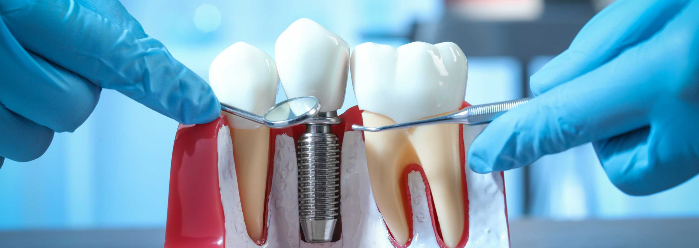
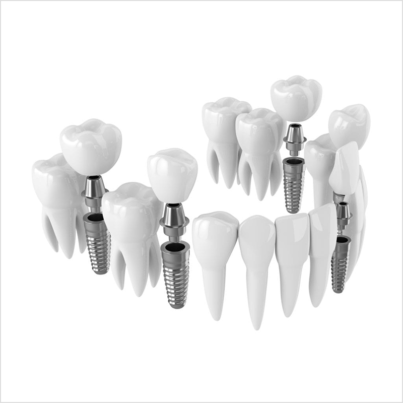
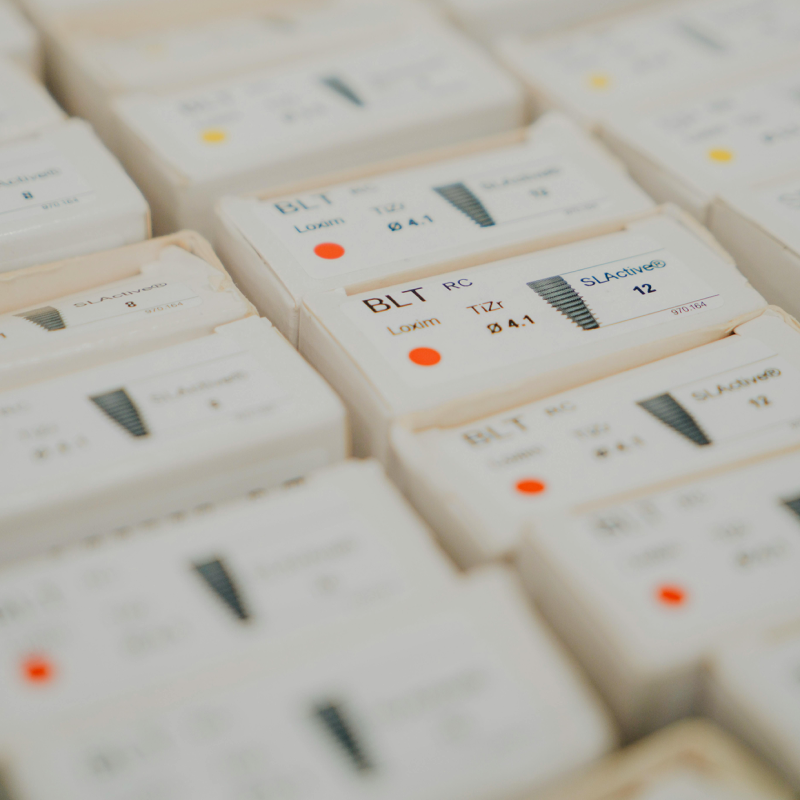
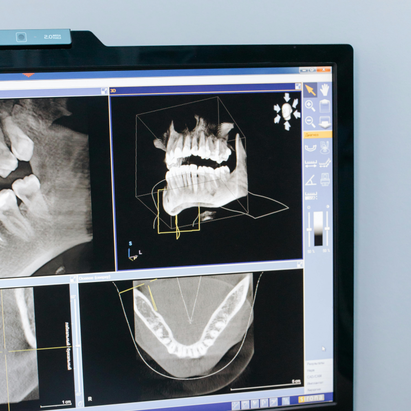

Az implantátumok kialakítása, hossza és szélessége a rendelkezésre álló csontmennyiségtől függően változik. Az implantátumok kiváló minőségű, biokompatibilis titánból készülnek, egy fém csavart alkotva, amelyet sebészi úton helyezünk be az állkapocscsontba.
A beültetés után lezajlik a „csontosodás” néven ismert biológiai folyamat, melynek során az implantátum és a csont összeforr. Az osszeointegrácó lehetővé teszi, hogy az implantátum rögzítőelemként működjön és reprodukálja a természetes gyökér funkcióját. A fogászati implantátum tartást biztosít a hiányzó fog vagy fogak pótlására tervezett restaurációs elemnek. Ez lehet egy rögzített korona egyetlen foghoz, vagy egy hídpótlás, amelyet két vagy több implantátumhoz rögzítenek, akár egy egész fogsor pótlására is.
Független fogászati rendelőként nem vagyunk korlátozva az anyagok és alkatrészek kiválasztásában. Így mindent megteszünk pácienseinkért, hogy biztosítsuk implantátumaik hosszú távon egészségesek maradjanak.
Nobel Biocare™ fogászati implantátumokat használunk, és ezt a rendszert már a 90-es évek eleje óta alkalmazzuk. Kiterjedt és átfogó implantátum és implantátum alkatrész készlettel rendelkezünk, ami lehetővé teszi, hogy a sebészeti és fogpótlási részeket gondosan, kifejezetten az adott páciens és az egyedi helyzet igényeinek megfelelően választhassuk ki.A legtöbb esetben az implantátumok beültetése helyi érzéstelenítésben végzett kisebb műtéti beavatkozással történik, bár ideges és fóbiás páciensek számára altatásos kezelés is elérhető.


A 3D képalkotás fejleszti "3D-gondolkodásunkat" és térlátásunkat, javítva diagnosztikai és kezelési képességeinket. A 3D képalkotás és 3D nyomtatás technológiái drámaian megváltoztatták a komplex kezelést igénylő páciensek ellátását, átalakítva az implantációs sebészetet, a gyökérkezelést, a korona- és hídpótlásokat, és hozzájárulva a pácienseink számára egyszerűbb és kiszámíthatóbb kezeléshez.
Rendkívüli technológiai erőforrásaink lehetővé teszik különleges kezelések végrehajtását – például végleges rögzített implantátum híd elkészítését mindössze egy 30 perces műtéti beavatkozás során.
Hétköznapibb szinten, a fogak, állcsont és arc szerkezetének pontos vizualizálása megkönnyíti olyan problémák diagnosztizálását, mint például az állkapocs finom elváltozása, amely egy meghibásodott gyökér korai fertőzésével jár – amely súlyos fájdalmat okozhat – vagy a csonthiányok azonosítása – amelyek jelentősen megnehezíthetik az implantátum kezelést. Ez kiszámíthatóbbá és kevésbé invazívvá teheti a későbbi kezelést.